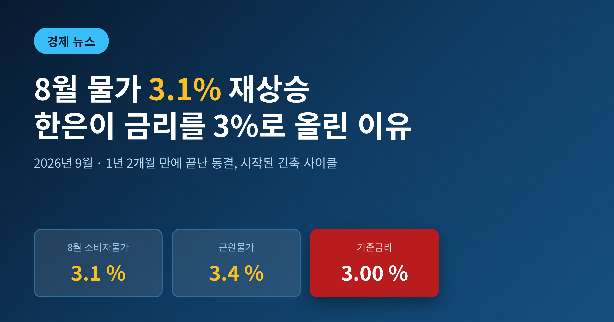
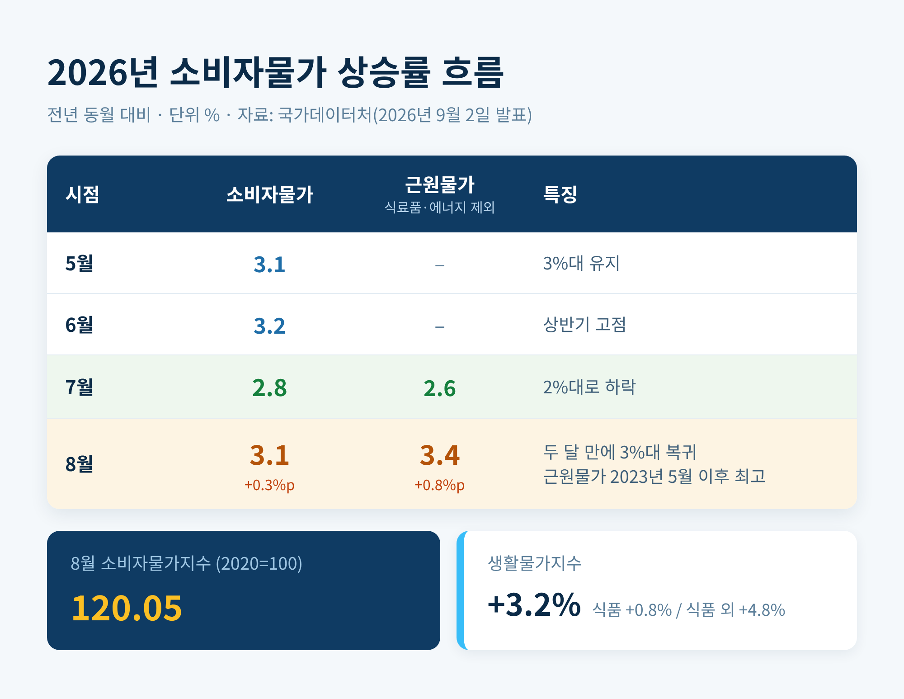
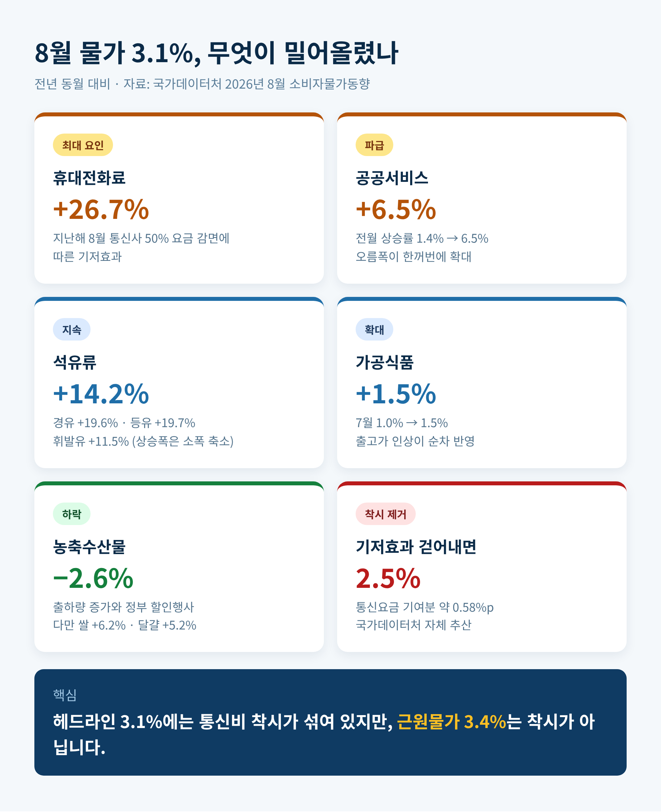
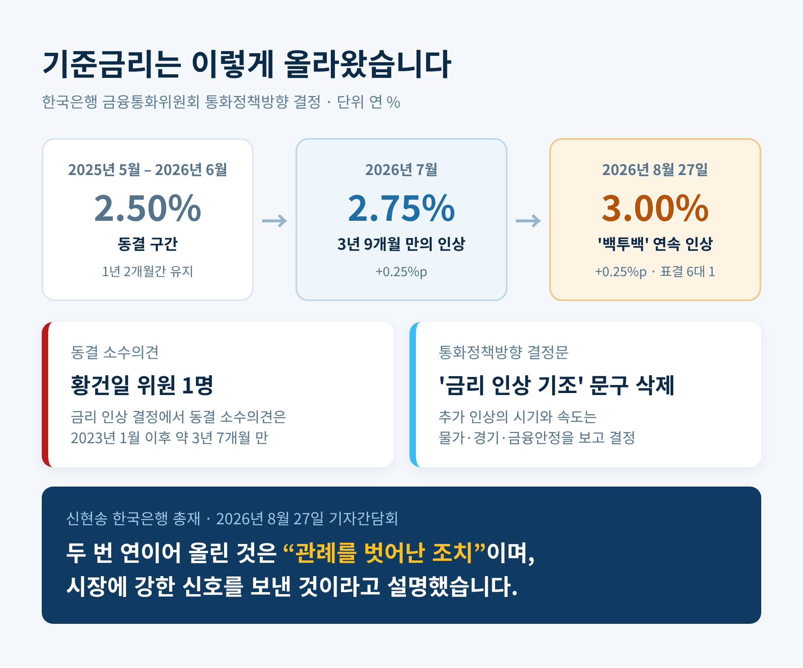
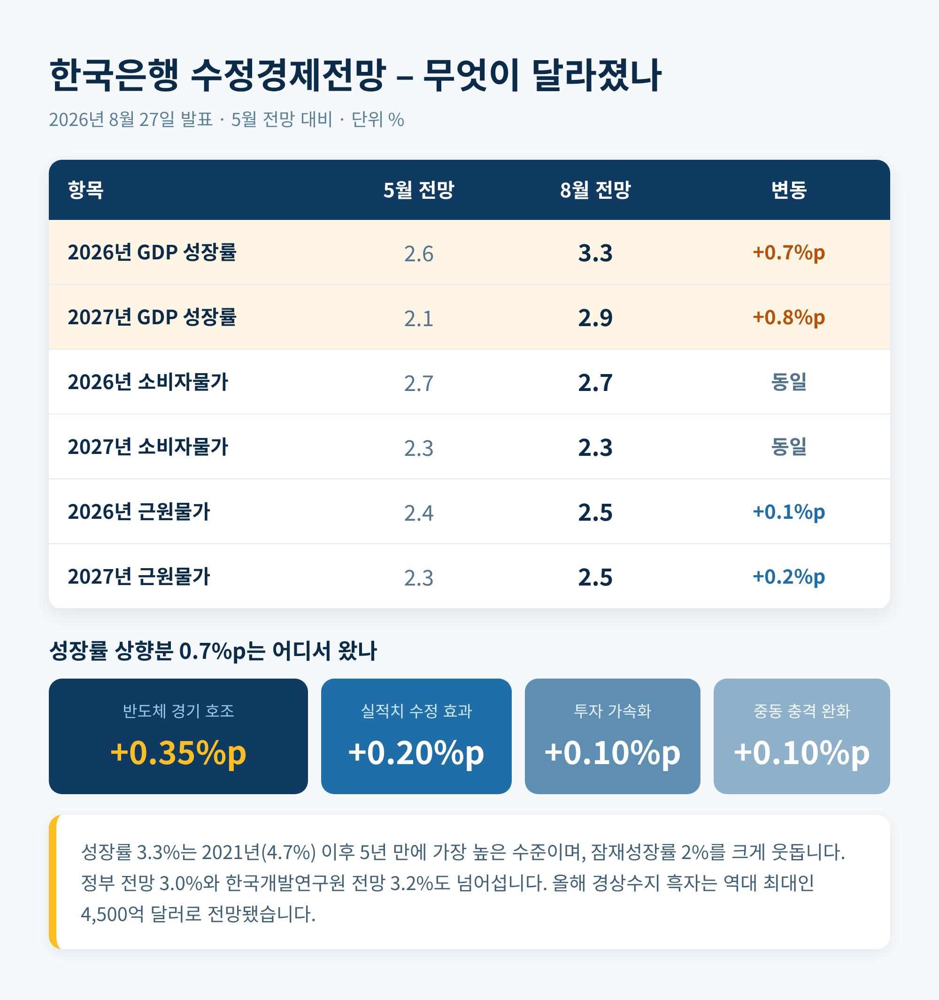
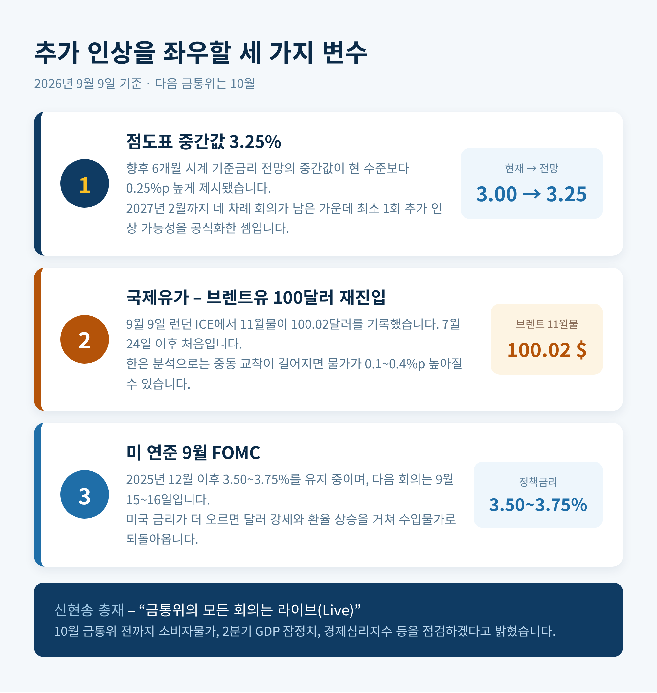

이번 글에서는 2026년 8월 소비자물가와 한국은행 기준금리 인상을 함께 정리해 보겠습니다. 물가 상승률은 한 달 만에 다시 3%대로 올라섰고, 금통위는 그보다 앞서 기준금리를 3.00%로 끌어올렸습니다. 두 사건은 따로 떨어진 뉴스가 아니라 하나의 흐름입니다.

세 줄 요약
- 2026년 8월 소비자물가 상승률은 3.1%로, 7월 2.8%에서 두 달 만에 다시 3%대에 올라섰습니다.
- 한국은행 금융통화위원회는 그에 앞선 8월 27일 기준금리를 연 2.75%에서 3.00%로 0.25%포인트 올렸습니다. 7월에 이은 두 달 연속 인상입니다.
- 물가·금리 사이클이 완전히 방향을 틀었습니다. 다만 8월 물가에는 통신요금 기저효과라는 착시가 상당 부분 섞여 있습니다.
무슨 일이 있었나 — 숫자부터 정리합니다
국가데이터처가 9월 2일 발표한 2026년 8월 소비자물가동향에 따르면, 지난달 소비자물가지수는 120.05였습니다. 1년 전보다 3.1% 올랐습니다. 전월 대비로는 0.2% 상승했습니다.
흐름을 보면 5월 3.1%, 6월 3.2%였다가 7월에 2.8%로 내려앉았습니다. 그리고 8월에 다시 3.1%로 올라섰습니다. 한 달 만의 복귀입니다.
더 눈여겨볼 지표는 근원물가입니다. 식료품과 에너지를 제외한 지수가 3.4% 올랐습니다. 전월 2.6%에서 0.8%포인트나 뛰었습니다. 2023년 5월 3.8% 이후 가장 높은 숫자입니다. 농산물과 석유류를 제외한 지수도 3.1%로, 2023년 12월 이후 최고 수준을 기록했습니다.
생활물가지수는 3.2% 상승했습니다. 그 안을 들여다보면 식품이 0.8% 오른 반면 식품 이외 품목은 4.8% 올랐습니다. 장바구니보다 다른 곳에서 부담이 커졌다는 뜻입니다.

3.1%를 뜯어보면 — 통신요금 하나가 만든 착시
물가를 끌어올린 주역은 뜻밖에도 휴대전화 요금이었습니다. 8월 휴대전화료는 1년 전보다 26.7% 올랐습니다. 통신사가 지난해 8월 요금을 50% 감면했던 탓에 비교 기준이 낮아졌기 때문입니다. 이른바 기저효과입니다.
그 여파로 공공서비스 물가는 6.5% 상승했습니다. 전월 상승률이 1.4%였으니 오름폭이 한꺼번에 벌어진 셈입니다.
국가데이터처 이두원 경제동향통계심의관은 이 기저효과의 기여분을 약 0.58%포인트로 계산했습니다. 이를 걷어내면 8월 물가는 2.5% 수준으로 본다고 설명했습니다. 3.1%라는 숫자를 그대로 받아들이면 안 되는 이유입니다.
나머지 품목은 어땠을까요. 석유류는 14.2% 올라 여전히 두 자릿수였습니다. 경유 19.6%, 등유 19.7%, 휘발유 11.5%입니다. 다만 상승폭 자체는 전월보다 소폭 줄었습니다. 농축수산물은 오히려 2.6% 하락했습니다. 출하량이 늘고 정부 할인행사가 겹친 결과입니다. 그럼에도 쌀 6.2%, 고등어 6.5%, 수입 쇠고기 7.4%, 달걀 5.2%처럼 자주 사는 품목은 올랐습니다. 가공식품도 1.5% 올라 7월 1.0%보다 오름폭이 커졌습니다. 출고가 인상이 순차적으로 반영되고 있습니다.

한국은행은 왜 물가 발표 전에 먼저 움직였나
금통위의 인상 결정은 물가 발표보다 엿새 앞선 8월 27일에 나왔습니다.
금통위는 이날 기준금리를 연 2.75%에서 3.00%로 0.25%포인트 올렸습니다. 7월에 2.50%에서 2.75%로 올린 데 이어 한 달 만의 추가 인상입니다. 시장에서는 이를 '백투백 인상'이라고 부릅니다. 금통위가 기준금리를 연속으로 올린 것은 이번이 네 번째입니다.
예전에는 동결이 기본값이었습니다. 지난해 5월 2.50%로 내린 뒤 1년 2개월 동안 금리는 그 자리에 머물렀습니다. 지금은 다릅니다. 두 달 사이에 0.5%포인트가 올라갔고, 긴축 사이클이 본격적으로 시작됐습니다.
시장의 예상과도 어긋났습니다. 7월 인상 직후 실시된 설문에서는 응답자 전원이 다음 변경 시점을 10월로 봤습니다. 8월에는 동결 의견이 상당했습니다. 금통위는 그 예상을 깼습니다.
신현송 한국은행 총재는 기자간담회에서 '호미로 막을 것을 가래로 막는다'는 속담을 꺼냈습니다. 물가가 튀어 오른 뒤에 대응하면 훨씬 큰 대가를 치른다는 뜻입니다. 그는 두 번 연이은 인상을 두고 "관례를 벗어난 조치"라고 표현했습니다. 시장에 강한 신호를 보내겠다는 의도였습니다.
선제 대응의 논리는 이렇습니다. 기대인플레이션을 일찍 붙잡아두면 긴축의 강도와 기간을 줄일 수 있고, 결국 성장 측면에서 치르는 비용도 최소화할 수 있다는 것입니다.

이번 결정의 진짜 배경 — 성장률 3.3%
금통위가 과감해질 수 있었던 근거는 물가가 아니라 성장이었습니다.
한은은 같은 날 수정경제전망을 통해 2026년 실질 GDP 성장률 전망치를 3.3%로 올렸습니다. 5월 전망치 2.6%에서 0.7%포인트를 높인 것입니다. 2021년 4.7% 이후 5년 만에 가장 높은 수준이고, 한은이 보는 잠재성장률 2%를 크게 웃돕니다. 정부 전망 3.0%와 한국개발연구원 전망 3.2%도 넘어섭니다. 내년 전망치 역시 2.1%에서 2.9%로 올렸습니다.
상향분의 절반은 반도체가 만들었습니다. 반도체 경기 호조의 기여도가 0.35%포인트였습니다. 여기에 지난해와 올해 1분기 실적치 수정 효과 0.20%포인트, 투자 가속화 0.10%포인트, 중동 리스크 충격이 예상보다 작았던 점 0.10%포인트가 더해졌습니다. 올해 경상수지 흑자는 역대 최대인 4,500억 달러로 전망됐습니다.
물가 전망도 함께 조정됐습니다. 소비자물가 전망치는 올해 2.7%, 내년 2.3%로 5월과 같았습니다. 반면 한은이 더 무게를 두는 근원물가 전망치는 올해와 내년 모두 2.5%로 올라갔습니다. 기대인플레이션율은 2.7~2.8% 수준을 유지하고 있습니다.
환율도 고려 대상이었습니다. 신 총재는 원·달러 환율이 1300원대로 내려왔지만 역사적으로 보면 여전히 높은 수준이라고 평가했습니다. 환율이 밀어 올리는 수입물가가 국내 물가로 번지는 것을 미리 차단하겠다는 뜻입니다.

만장일치는 아니었습니다
이번 결정이 매끄럽게 이뤄진 것은 아닙니다.
표결은 6대 1이었습니다. 황건일 위원은 기준금리를 연 2.75%로 동결하는 것이 바람직하다는 소수의견을 냈습니다. 금리 인상 결정에서 동결 소수의견이 나온 것은 2023년 1월 이후 약 3년 7개월 만입니다. 가파른 인상 속도에 대한 우려였습니다.
통화정책방향 결정문에서 '금리 인상 기조'라는 문구가 빠진 점도 눈에 띕니다. 대신 물가와 경기, 금융안정 상황을 면밀히 점검하며 추가 인상의 시기와 속도를 결정하겠다고 적었습니다. 속도조절 가능성을 열어둔 표현입니다.
부담을 지는 쪽은 결국 차주입니다. 금리가 0.5%포인트 오르면 가계의 연간 이자 부담은 6조 5,000억 원 늘어나는 것으로 분석됐습니다. 계층별로는 고소득 가계 4조 2,000억 원, 중소득 가계 1조 6,000억 원, 저소득 가계 7,000억 원입니다. 주택담보대출 차주만 놓고 보면 3조 7,000억 원이 늘어납니다. 실제 은행 대출금리도 이미 오름세입니다. 2026년 6월 기준 전체 대출금리는 연 4.31%로 전월 4.19%보다 0.12%포인트 상승했습니다.
한은도 이 부담을 모르지 않습니다. 다만 예상을 웃도는 성장세가 그 부담을 감당할 여력을 만들어줬다는 것이 이번 결정의 논리였습니다.
앞으로는 어떻게 될까
시선은 이제 다음 회의와 최종 도착점으로 향합니다.
이번에 공개된 향후 6개월 시계의 기준금리 전망, 이른바 점도표의 중간값은 3.25%였습니다. 현 수준보다 0.25%포인트 높습니다. 2027년 2월까지 네 차례 회의가 남은 상황에서 최소 한 번의 추가 인상 가능성을 공식화한 셈입니다. 일부에서는 최종금리가 3.75%까지 갈 수 있다는 시각도 나옵니다.
신 총재는 추가 인상의 폭과 시기를 데이터로 판단하겠다고 했습니다. "금통위의 모든 회의는 라이브"라는 표현을 썼습니다. 10월 금통위 전까지 소비자물가와 2분기 GDP 잠정치, 경제심리지수, 소득개선 파급효과를 살피겠다는 것입니다.
바깥 변수도 만만치 않습니다. 9월 9일 런던 ICE 선물거래소에서 11월 인도분 브렌트유는 배럴당 100.02달러를 기록했습니다. 100달러를 넘긴 것은 7월 24일 이후 처음입니다. 홍해에서 사우디아라비아와 예멘 후티 반군의 교전이 격화되면서 4년간의 휴전이 깨진 영향입니다. 뱅크오브아메리카는 이런 소규모 충돌이 연말까지 이어지면 브렌트유가 95~120달러 사이에서 거래될 수 있다고 봤습니다.
한은의 시나리오 분석에 따르면, 중동을 둘러싼 교착이 장기화될 경우 연 성장률은 0.1~0.3%포인트 낮아지고 물가는 0.1~0.4%포인트 높아집니다. 8월에도 석유류는 이미 14.2% 오른 상태였습니다.
미국 쪽도 변수입니다. 연방준비제도는 2025년 12월 이후 정책금리를 3.50~3.75%로 유지해 왔습니다. 다음 회의는 9월 15일과 16일입니다. 2% 목표를 웃도는 물가와 공급 측 압력을 지적하는 연준 인사들의 매파적 발언이 이어지면서, 시장은 인하가 아니라 인상 가능성을 저울질하고 있습니다. 미국 금리가 더 올라가면 달러가 강해지고 원·달러 환율도 다시 밀려 올라갈 수 있습니다. 그러면 수입물가를 통해 국내 물가로 되돌아옵니다.

정리하면 이렇습니다.
8월의 3.1%는 통신요금이 만든 착시를 상당 부분 담고 있습니다. 그 착시를 걷어내면 2.5%입니다. 그러나 근원물가 3.4%와 국제유가 100달러는 착시가 아닙니다. 한국은행이 물가 발표를 기다리지 않고 먼저 움직인 이유도 여기에 있다고 생각합니다.
— 지금 우리가 보고 있는 것은 한 달치 숫자가 아니라, 방향이 바뀐 사이클입니다.
물론 이 판단이 끝까지 옳을지는 아직 알 수 없습니다. 성장률 3.3%가 반도체 한 축에 크게 기대고 있다는 점, 그리고 그 축이 흔들리면 그림이 달라진다는 점은 한은도 인정하고 있습니다.
금리가 계속 오를 것이냐고 물으신다면, 저는 이렇게 답하겠습니다. 오르느냐 마느냐보다, 어디서 멈추느냐를 지켜볼 때입니다.
면책 안내
이 글은 공개된 통계와 언론 보도를 정리한 정보성 콘텐츠이며, 투자 권유나 금융 자문이 아닙니다. 기준금리·물가·환율 전망은 상황에 따라 언제든 바뀔 수 있습니다. 예금·대출·투자 관련 의사결정은 본인의 판단과 책임 아래, 필요하다면 전문가 상담을 거쳐 진행하시기 바랍니다.